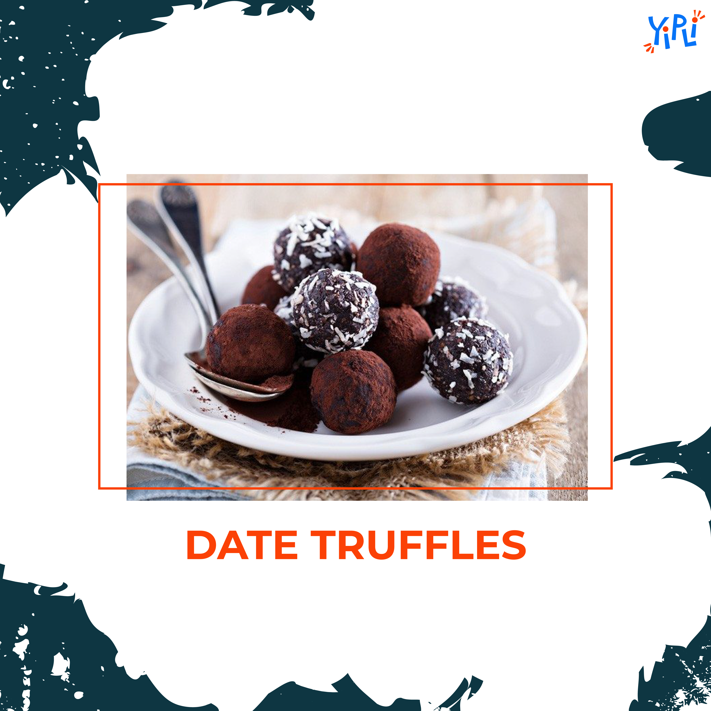

3 recipes for a healthy & lip smacking Eid Feast
Eid-Al-Fitr when broken down, means the ‘Celebration of breaking the fast’. Muslims all around the world participate in a month-long fasting, avoiding the consumption of food and water before the sunset in respect to the holy month of Ramzan. The month ends with a Grand feast that every household looks forward to with utmost excitement.
The importance of fasting is not just confined to traditions. It is about cleansing one's soul, learning to have empathy towards the less fortunate, teaching oneself the importance of discipline and more importantly, paving the way towards generosity. The impact of fasting for 30 days usually falls on one’s eating pattern and thus, taking care of what you eat becomes extremely important. Keeping these points in mind we bring to you 3 extremely delicious yet healthy recipes to help you break your fast in a healthy lip smacking manner.
Moroccan Chicken Stew

Ingredients
- 1.5 pounds boneless chicken thighs
- ¾ teaspoon salt, divided
- ½ teaspoon freshly ground black pepper, divided
- 1 tablespoon olive oil
- 1½ cups chopped onion
- 2 large cloves garlic, chopped
- 1 tablespoon tomato paste
- 2 cans (14.5 ounces each) diced tomatoes, drained
- ½ teaspoon ground cumin
- ½ teaspoon cinnamon
- 2 cans (15 ounces each) chickpeas, rinsed and drained
- 1 cup low-sodium chicken broth
- 1 cup roughly chopped parsnips
- 1 cup roughly chopped carrots
- 3 tablespoons chopped fresh cilantro (or parsley)
Recipe
- Heat the oil in a pan, Keep the 2 chicken leg piece , season them with salt and pepper brown them both side for 3 minutes per side
- Take the chicken off the pan (Note – Keep it warm)
- Using the same pan, put in some finely chopped onions and stir it till they are brown, add ginger garlic paste to it and stir for 2 minutes more
- Add tomatoes, cumin and cinnamon; cook, stirring, 2 minutes more.
- Once we are ready with the paste transfer the chicken pieces to the paste along with carrot, parsnips broth, chickpeas with salt and pepper according to taste
- Simmer the entire mix and close the pan for 40 minutes.
- Serve the stew with couscous.
- Garnish with cilantro or parsley.
Nutritional value per bowl: Proteins 8.1 g, Fats 5.4 g, Carbs 10.5 g, Fibre 3.1 g
Hyderabadi Harees
2 cups of wheat grains
- 1 kg (2 lbs) of chicken, deboned
- 2 sticks of cinnamon sticks
- 1 tsp of black pepper powder
- salt to taste
- melted butter or olive oil(Optional)
- Cashew and Coriander leaves (Optional)
Recipe
Soak the wheat overnight, the next morning take a bowl and add the rest of the ingredient into one bowl along with soaked wheat, add required water to boil it, boil it till you can see the hares having water consistency, once ready take a hand blender or automatic blender and blend it well and voila. Serve it hot after adding olive oil on the top.
Date Truffles

- 10 medjool dates, pitted (about 3/4 cup or 180 g packed)
- 1 Tbsp coconut oil
- 2 Tbsp water
- 1/4 cup unsweetened cacao powder or cocoa powder (plus more for rolling)
- 3/4 tsp vanilla extract
- 1 ½ Tbsp cashew butter (or sub other nut or seed butter)
- 1 healthy pinch sea salt
- 1/2 -3/4 cup almond flour
Recipe
Add pitted dates with a bit of water and coconut oil to the food processor or a grinder, mix them up till it becomes paste like. Add cocoa , salt vanilla and cashew butter and blend again to mix them up together, Put ¼ cup of almond flour to make the mixture pliable and easy to roll into balls, the batter by now will resemble that of a brownie, roll the mixture into truffle balls and add cocoa occasionally to give it a chocolaty flavour
We are sure these recipes will add just the right amount of healthy twist to your Eid feast, and keep you asking for more. So take out your aprons, put your chef’s hat on and get cooking! Do share your stories with us. Until then, feast healthy! Ramadan Mubarak to you from Team Yipli!